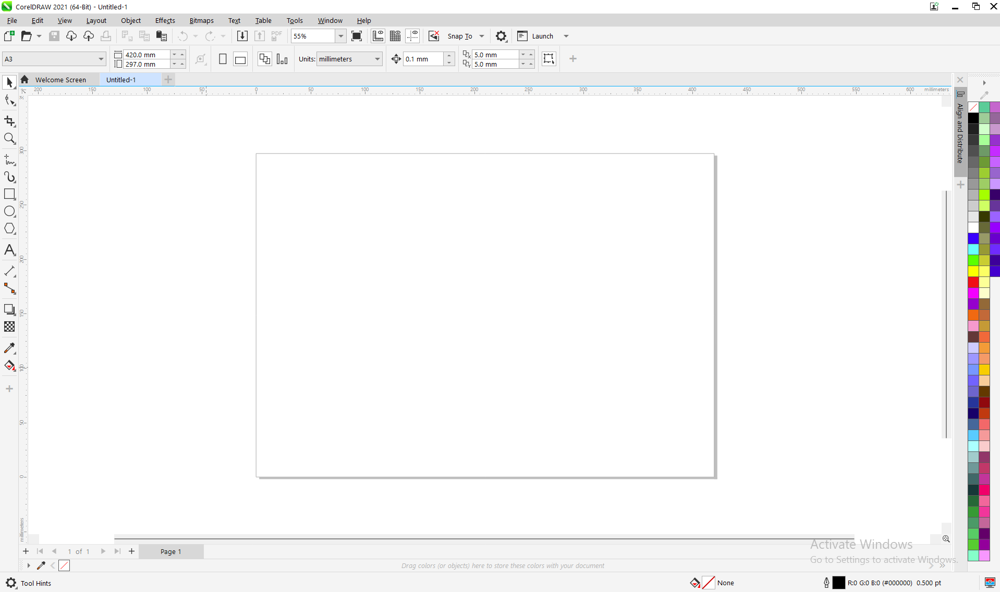
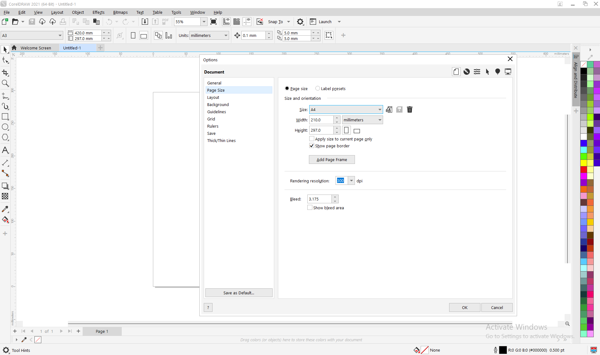
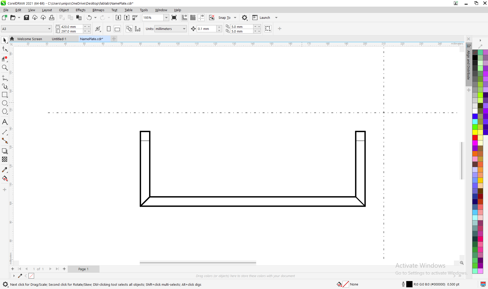
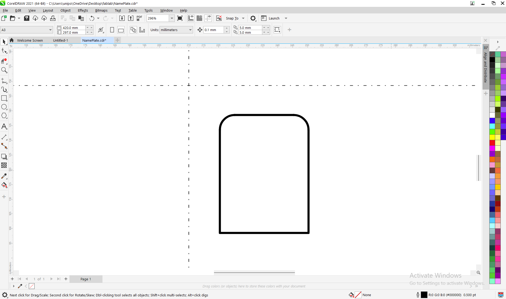
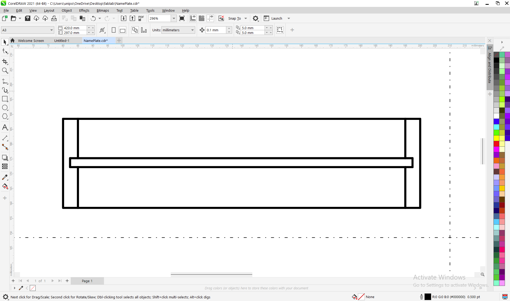
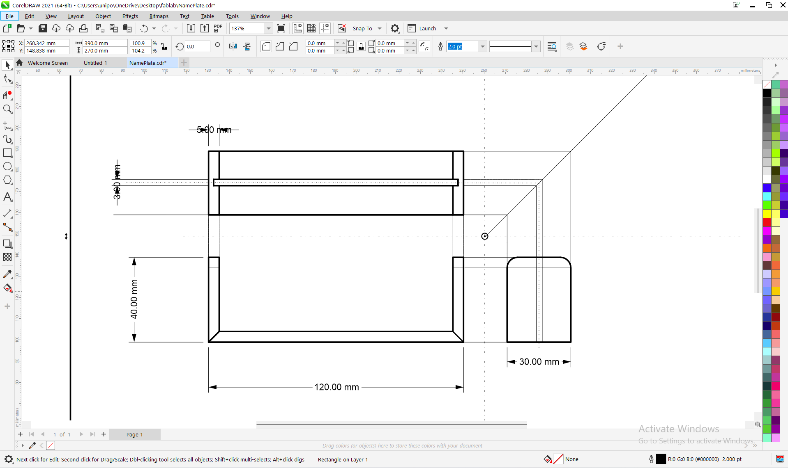

On This Page
Week 4: Computer-Aided Design - 2D Drawing with CorelDRAW
Date: October 15 - October 20, 2025
"CAD is the bridge between ideas and physical reality." - UNIPOD Training
Quick Summary
- Skills Learned: Vector graphics design, technical drawing, dimensioning, file preparation for laser cutting
- Digital Tools and Software Used: CorelDRAW, Inkscape (for comparison), Adobe Illustrator (brief exploration)
- Topics: 2D CAD, Vector Graphics, Technical Drawing Standards, File Formats for Fabrication
- Key Concepts: Scalability, Precision Drawing, Layer Management, Export Settings
- Project: Office Desk LED Nameplate - Technical Drawings
- Deliverables: Front, Side, and Top view drawings in CorelDRAW format, exported PDF files for documentation
Introduction
This week focused on Computer-Aided Design (CAD) with an emphasis on 2D vector graphics using CorelDRAW. As part of the UNIPOD Digital Fabrication Program, we explored how CAD serves as the crucial link between conceptual design and physical fabrication. The Office Desk LED Nameplate project from Week 3 provided the perfect opportunity to apply these skills in creating precise technical drawings ready for laser cutting.
In the African context where access to manufacturing equipment may be limited, mastering 2D CAD skills is particularly valuable. With CorelDRAW, I learned to create designs that can be fabricated multiple times, adapted for local materials (like available plywood thicknesses), and shared digitally across different fabrication labs.
The week's objectives aligned perfectly with the learning outcomes from the UNIPOD curriculum: comparing 2D and 3D workflows, preparing files for fabrication (specifically laser cutting), using multiple CAD tools, and documenting the design process for community replication.
CorelDRAW Software Overview
Why CorelDRAW for 2D CAD?
CorelDRAW is a professional vector graphics editor that offers several advantages for technical drawing and fabrication preparation:
Precision Drawing Tools
CorelDRAW provides exact dimension input, snapping tools, and alignment features essential for technical drawings.
Industry-Standard Export
Supports PDF export with high precision, maintaining vector quality for documentation and sharing.
Layer Management
Allows organization of different views (front, side, top) and annotations on separate layers.
Comparison with Other Tools
I also explored Inkscape (free/open-source) and Adobe Illustrator to understand different workflows:
- Inkscape: Excellent free alternative, uses SVG format, good for basic vector work
- Adobe Illustrator: Industry standard, excellent integration with other Adobe products
- CorelDRAW: Best balance of precision tools and user-friendly interface for technical drawings
CorelDRAW Interface & Page Setup
CorelDRAW Workspace Configuration

CorelDRAW Main Interface
The CorelDRAW workspace is organized for efficient 2D technical drawing, featuring:
- Menu Bar: Access to all file, edit, view, and layout operations
- Property Bar: Context-sensitive tools that change based on selected objects
- Toolbox: Comprehensive drawing, shaping, and editing tools
- Drawing Window: Main workspace where designs are created
- Docker Panels: Object properties, color palettes, and layer management
- Status Bar: Real-time information about selected objects

Page Setup Configuration for Technical Drawing
Proper page setup is essential for creating accurate technical drawings:
- Page Size: A4 (210mm × 297mm) for standard documentation
- Orientation: Landscape for optimal multi-view drawing layout
- Units: Millimeters (mm) for precision engineering drawings
- Resolution: 300 dpi for high-quality printing and output
- Bleed: 3mm for laser cutting alignment marks
- Grid Setup: 5mm major grid with 1mm minor divisions for precise snapping
Key Setup Steps:
- Created separate layers for different drawing elements (construction lines, views, dimensions, annotations)
- Enabled grid snapping and guideline snapping for precision
- Set up color coding system for different line types
- Configured dimensioning styles according to ISO 128 standards
- Saved as a reusable template for future technical drawings
Technical Drawings - Orthographic Views
Using CorelDRAW, I created three orthographic views of the Office Desk LED Nameplate following standard technical drawing conventions. These views provide complete information for fabrication:

Front View (Elevation)
The main elevation showing all visible features from the front, including text cutouts, mounting holes, and LED slots. This view provides the primary dimensions for laser cutting.
- Overall Dimensions: 150mm × 40mm
- Text Height: 25mm (converted to curves for cutting)
- Mounting Holes: 3mm diameter (4x, positioned at corners)
- LED Slots: 5mm diameter (5x, evenly spaced)
- Corner Radius: 5mm for safety and aesthetics

Side View (Profile)
Profile view showing material thickness and internal features. This view is essential for understanding the three-dimensional form and assembly requirements.
- Material Thickness: 6mm (standard plywood)
- Battery Compartment: 35mm × 20mm × 15mm internal space
- Wire Channels: 2mm width for routing connections
- Stand-off Height: 10mm from desk surface for airflow
- Switch Opening: Located on right side for easy access

Top View (Plan)
Plan view showing component layout, switch placement, and overall footprint. This view helps with assembly planning and component positioning.
- Switch Cutout: 12mm × 6mm (standard toggle switch)
- Component Layout: Optimized for easy assembly and maintenance
- Wire Routing Channels: Clearly defined paths for clean installation
- Battery Access: Rear access panel for easy battery replacement
- Overall Footprint: 150mm × 40mm (matches front view)
Complete Technical Drawing Sheet
Final Drawing Assembly

Complete Drawing Sheet with All Views
The comprehensive technical drawing sheet brings together all three orthographic views arranged according to standard technical drawing conventions. This sheet includes all necessary information for fabrication, assembly, and quality control.
Drawing Features:
- Standard Layout: Front, top, and side views properly aligned using projection lines
- Complete Dimensioning: All critical dimensions shown with proper tolerances (±0.2mm)
- Material Specifications: 6mm Baltic Birch Plywood with grain direction indicated
- Fabrication Notes: Laser cutting parameters (Power: 80%, Speed: 20mm/s)
- Title Block: Professional title block with project information, scale (1:1), revision history
- Symbols & Conventions: Standard symbols for holes, materials, and surface finishes
Standards Compliance:
This drawing follows ISO 128 standards for technical drawings, ensuring international readability. Proper line weights are used (thick for visible edges, thin for dimensions, dashed for hidden features).
CAD Files Download
Download Design Files
All CAD files for the Office Desk LED Nameplate are available for download. These files are ready for documentation, sharing, and can be adapted for different materials or sizes.
Available Formats:
- CorelDRAW (.cdr): Original editable file with all layers and settings
- Adobe PDF (.pdf): High-quality PDF document for printing, sharing, and documentation
- PDF (Vector): Preserves vector quality for scaling and professional printing
- PDF (Print Ready): Optimized for standard A4 printing with proper margins
Download Links:
Download CorelDRAW File (.cdr) Download Technical Drawing PDF
PDF File Details:
- File Size: 2.4 MB (optimized for web and email)
- Pages: 1 page with all three orthographic views
- Resolution: 300 DPI for high-quality printing
- Vector Elements: All text and lines remain editable vectors
- Compatibility: Can be opened with Adobe Acrobat Reader, Chrome, Firefox, and most PDF viewers
Note: These files are shared under Creative Commons Attribution-ShareAlike license. You are free to use, modify, and share with attribution to the original designer.
Reflection
What I Learned
This week's exploration of 2D CAD with CorelDRAW was incredibly valuable. I gained practical skills in:
- Precision in Design: Learning to work with exact dimensions and tolerances changed how I approach design problems
- Fabrication Awareness: Understanding how design decisions affect manufacturability, especially for laser cutting
- Software Comparison: Appreciating the strengths of different tools - CorelDRAW for technical drawing, Inkscape for accessibility, Illustrator for professional workflows
- Standard Compliance: Following technical drawing standards ensures my designs can be understood and fabricated anywhere
- PDF Export Skills: Learning to create professional PDF documents that maintain vector quality for documentation
Challenges and Solutions
Several challenges emerged during the week:
- Challenge: Managing multiple views and keeping them aligned
Solution: Using construction lines and layer locking features in CorelDRAW - Challenge: Understanding proper dimensioning conventions
Solution: Studying ISO 128 standards and practicing with sample drawings - Challenge: Creating high-quality PDF exports
Solution: Configuring PDF export settings for vector preservation and proper scaling
Application to African Context
This experience highlighted the importance of CAD skills in the African maker context:
- Digital Documentation: PDF files provide universal access to technical drawings without specialized software
- Local Adaptation: Easy to modify designs for locally available materials (different plywood thicknesses, acrylic sheets, etc.)
- Knowledge Sharing: PDF files can be shared across the continent via email or mobile devices, enabling collaboration
- Economic Opportunity: These skills enable local production of customized products with professional documentation
- Accessibility: PDF format works on almost any device, making technical knowledge more accessible
Looking Forward
As I move to 3D CAD next week, I now appreciate the foundation that 2D skills provide. The precision and attention to detail required in 2D technical drawing will directly translate to better 3D modeling. I'm particularly excited to explore parametric design, where dimensions can be linked and modified globally - something that would have saved time this week when experimenting with different material thicknesses.
The Office Desk LED Nameplate is now fully documented with professional technical drawings in both CorelDRAW and PDF formats. The PDF export capability is especially valuable for sharing designs with collaborators who may not have access to CorelDRAW software. Next week, I'll bring this design into 3D space, creating a virtual prototype that can be tested and modified before any physical material is cut.